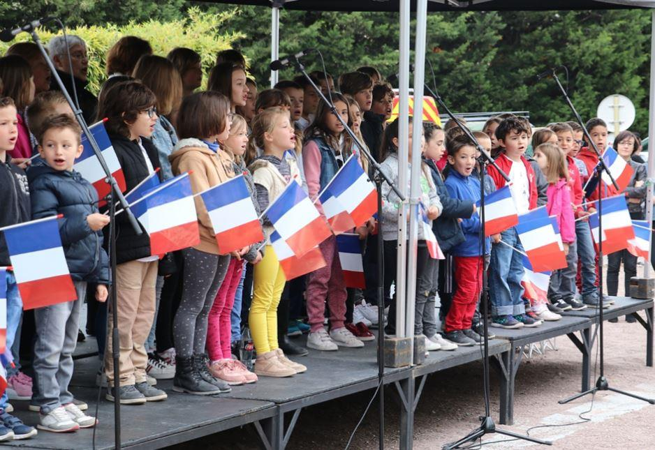

Esprit de combat, esprit de sacrifice : au nom de quoi ?
par Pierre de LAUZUN
Il y a quelques semaines deux fusiliers marins ont été tués dans une opération commando pour libérer des otages français aux mains de djihadistes. Ils ne sont pas morts du fait qu’il y a un quota inévitable de pertes, comme dans les accidents de la route. Ils sont morts parce que très consciemment ils ont mis leur vie en danger grave, et cela uniquement pour accomplir leur mission. De même, le colonel Beltrame a mis très consciemment et sans ordre explicite sa vie en danger en se constituant lui-même otage, pour permettre la libération d’autres otages, et il en est mort.
De tels événements soulèvent beaucoup de questions, notamment philosophiques et existentielles. Mais je voudrais poser le problème sous l’angle stratégique. Pour que le pouvoir politique en charge puisse donner à un commando l’ordre de prendre des risques graves afin d’accomplir une mission, si noble soit celle-ci (et en l’espèce on peut discuter de l’objectif), il faut par construction qu’il ait devant lui des gens qui acceptent de prendre ce risque. Il se trouve qu’il y en a encore, et beaucoup, dans l’armée française. Cela nous paraît donc aller de soi. Ce ne l’est pas du tout.
Il faut bien comprendre en effet ce qui leur est demandé : courir un risque élevé de mourir dans l’opération. C’est le métier du soldat ou du militaire direz-vous. Oui, mais justement, là est bien la question : pourquoi des individus, de grande qualité personnelle, acceptent les risques d’un tel métier ? Évidemment pas au vu de la rémunération, comparée à celle de la plupart des métiers du civil ; et de toute façon, comment une rémunération monétaire pourrait-elle compenser un risque élevé de mourir dans l’accomplissement de son travail ? Il y a bien des mercenaires direz-vous. Oui mais justement, ces personnes ne sont en rien des mercenaires. Et fort heureusement, car le mercenaire calcule, et n’hésite pas à se retourner en cas de besoin. Il n’a donc pas la fiabilité de ces soldats.
Nous connaissons la réponse bien sûr : quelle que soit la façon dont on la nomme ou la fonde, il y a une éthique du soldat, fondée notamment sur ce qu’on doit bien appeler le patriotisme ;l’idée qu’il est juste et noble d’accepter le risque de mourir pour une cause qui le mérite, et notamment pour sa communauté. Il est manifeste que nous avons collectivement un besoin absolu de telles personnes. Car sans eux, pas d’armée possible, pas même de gendarmerie. Mais du coup la question se déplace : qu’est-ce qui fait que dans un pays des personnes vivent ce patriotisme, ou cet esprit de sacrifice, jusqu’au bout s’il le faut ?
Il y a un siècle la réponse était alors relativement simple, au moins en première analyse. Hors franges marginales, toute la société enseignait un tel patriotisme et l’esprit de sacrifice correspondant, et en était pénétrée. Cela n’avait pas que des vertus : il y avait des hypocrites ; il y a eu aussi des tragédies comme 14-18. Mais quoi qu’il en soit, la question de la défense, de la protection, avait sur ce plan une réponse : des personnes, nombreuses, acceptaient cette exigence jusqu’au sacrifice de leur vie.
Il y a en a encore aujourd’hui, la preuve en est donnée chaque jour, et les cas plus médiatiques évoqués ci-dessus nous le rappellent ; ils nous montrent aussi que le public y est sensible et reconnaissant. L’image de l’armée est bonne. Fort bien. Mais la question demeure : justement, pourquoi y en a-t-il encore ?
Car l’esprit public a bien changé depuis un siècle. Peut-on sérieusement soutenir que le patriotisme et l’esprit de sacrifice sont parmi les piliers fondateurs de notre société, notamment dans la manière dont elle se présente elle-même, dans l’opinion, dans les médias, à l’école ? Les programmes scolaires sont-ils conçus pour susciter cet état d’esprit chez les élèves ? La révolution culturelle soixante-huitarde est-elle adaptée à la production de ce genre d’hommes ? Et l’éducation nationale, centrée sur l’idée de l’élève qui s’éduque lui-même, qui cherche sa voie comme il l’entend, selon ses propres vues et intérêts ? Évidemment non. Encore moins, bien sûr, l’état d’esprit hédoniste et calculateur qui imbibe notre vie commune, ou le relativisme affiché, dans lequel chacun définit sa voie comme il l’entend. Car dans une telle perspective, sauf têtes brûlées, on serait fou de prendre le risque de se faire tuer ; surtout s’il s’agit d’exécuter les ordres d’un pouvoir politique sur lequel on n’a qu’assez peu de prise, et qui peut poursuivre n’importe quel objectif, y compris médiatique ou idéologique.
La conclusion s’impose : des personnes ayant cet esprit de patriotisme et, si besoin est, de sacrifice ne sont normalement pas produits par la culture ambiante. Nous le savons tous, ils sont issus dans leur majorité de milieux sociologiquement bien définis, passablement décalés par rapport à la société. Et pour mettre les pieds dans le plat, des milieux en général assez traditionnels, souvent croyants. Ce qui permet de maintenir un socle significatif, une masse critique, dans les armées, et d’intégrer ceux qui sont venus là sans provenir de tels arrière-plans.
Tant mieux dira-t-on, la République en profite. Mais il y a quelque paradoxe à vivre sur une telle ressource, en faisant à peu près tout par ailleurs pour qu’elle disparaisse. Car si cela se produit, on sera très à court d’alternative. Croit-on qu’on va motiver des lycéens quelconques à la perspective exaltante de mourir pour le ‘patriotisme constitutionnel’ d’Habermas ? Pour l’équilibre écologique ? Tout cela peut être tout à fait respectable à son niveau, mais hors cas particuliers on ne meurt pas pour cela, encore moins si on n’a pas été éduqué pour intérioriser une telle perspective. Ne resterait alors que le mercenariat : l’Empire romain s’y est adonné à la fin, avec les résultats qu’on connaît. Car celui qui accepte de mourir mais constate que ses maîtres ne s’y résolvent pas conclut assez vite qu’il a tout intérêt à prendre leur place, et qu’il le peut. Reste encore la technologie, à l’américaine, mais elle ne résout qu’une partie de la question. Nous n’avons pas de robots capables de jouer les commandos.
Nous n’avons donc pas le choix : nous devons collectivement réfléchir aux voies et moyens permettant autant que cela sera possible de diffuser et encourager un esprit de sacrifice et de patriotisme dans la population. Ou au moins une partie d’entre elle. Quoiqu’en pensent les idéologues, car paradoxalement eux-mêmes ont besoin de ces gens-là pour continuer à propager leurs théories sans être personnellement menacés. Comme les touristes au Bénin ont eu besoin des fusiliers marins. Qu’ils y réfléchissent !
Partager cette page